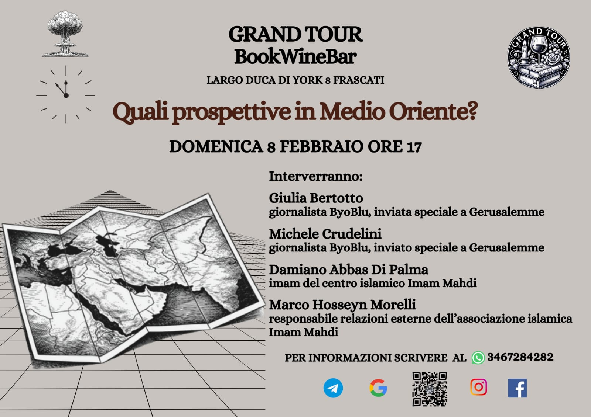

Prospettive sul Medio Oriente. Genealogia di una crisi

Il Medio Oriente come nodo della storia. Dove le civiltà si incontrano, si scontrano e si rispecchiano, e nel quale il passato non passa e il futuro è già in tensione.
Comprendere il Medio Oriente significa tanto sottrarlo alla frammentazione delle cronache quanto all’immediatezza dell’emergenza. Competizione egemonica nel Golfo, transizione problematica in Siria, crisi permanente a Gaza, conflitto irrisolto tra Palestina e Israele, escalation militare tra Israele e Iran, interessi occidentali nell’area, guerre per procura e instabilità sistemica: queste sono le emergenze. Nessuna di esse è intelligibile se considerata isolatamente, nessuna può essere ridotta a una sequenza di eventi episodici. Esse costituiscono piuttosto un sistema di tensioni storicamente stratificate, radicato in una lunga durata geopolitica, religiosa e culturale.
Le aree oggi più esposte al conflitto, in particolare Palestina e Iran, non rappresentano semplici teatri di crisi, ma autentici nodi di intersezione tra civiltà e interessi. Spazi in cui per secoli si sono sovrapposti imperi, religioni, tradizioni filosofiche e sistemi simbolici, generando una densità storica che continua a produrre effetti politici. Da questa profondità temporale nascono tanto le fratture tuttora visibili, quanto le possibilità ancora aperte.
La storia mostra che, se ogni civiltà rappresenta una sintesi originale, non esistono identità assolute: ogni civiltà si costituisce attraverso processi di incontro, conflitto e contaminazione. L’idea di una purezza originaria delle culture è una costruzione ideologica moderna, non meno artificiale dell’idea di progresso lineare e vuoto. Nessuna delle due rende giustizia né a quanto ci è stato trasmesso, né allo sviluppo a cui siamo aperti. E infatti, sembriamo oggi in larga parte sprovvisti delle categorie interpretative necessarie per comprendere pienamente la trasformazione sistemica che coinvolge l’intero spazio euro-mediterraneo e mediorientale. «Noi non sappiamo quale sortiremo domani», scriveva Eugenio Montale in una poesia significativamente intitolata Mediterraneo, evocando quel mare che da millenni costituisce l’epicentro instabile di un sistema che si estende dal Mar Caspio al Nord Africa includendo parte rilevante dello spazio europeo.
In questa prospettiva, un primo nodo concettuale appare decisivo: l’Islam non è estraneo all’Occidente. Esso si configura piuttosto come una forma di Occidente parallelo, generato nello stesso spazio mediterraneo-orientale e nel medesimo crogiuolo culturale che ha dato origine all’Europa cristiana. Se una progressiva separazione si è sedimentata nel corso dei secoli, essa è stata esasperata sopratutto dalla modernità coloniale e dall’ingegneria geopolitica novecentesca. E dove, nel loro costituirsi, i confini tra civiltà risultano porosi, nei loro sviluppi gli aspetti decisivi di ciascuna presentano spesso sorprendenti specularità.
Le origini dell’Islam si colloca tra il 610 e il 622, nel cuore dello scontro tra l’Impero romano d’oriente e l’Impero persiano sasanide. La predicazione di Maometto si sviluppa all’interno di questo spazio geopolitico centrale, e non ai suoi margini. In tale orizzonte si iscrive anche il Miʿrāj, il viaggio notturno del Profeta verso Gerusalemme, evento fondativo dell’Islam nel quale vengono rivelate le forme della preghiera e i principali doveri religiosi. Tali elementi intrattengono rapporti essenziali con la cultura del medioevo europeo.
Le cinque preghiere quotidiane, scandite secondo le fasi del giorno, si modellano infatti sulle cinque ore liturgiche cristiane, i cui tempi vengono precisati grazie ad una capacità di calcolo resa possibile dall’introduzione dello zero, che la cristianità medievale inizia ad elaborare con figure quali il pontefice Silvestro II D’Aurillac. Da parte sua, il Miʿrāj ha prodotto testi, immagini e narrazioni capaci di influenzare anche la cultura cristiana, riverberandosi in maniera esemplare nelle strutture simboliche del viaggio ultramondano compiuto da Dante nella Divina Commedia.
La conquista musulmana di Gerusalemme nel 637 inaugura una lunga fase in cui la città resta simultaneamente islamica, cristiana ed ebraica, luogo di sovrapposizione più che di esclusione, carattere che mantiene fino allo stabilirsi dello stato di Israele sotto protezione occidentale. Poco dopo, nel 644, la conquista della Persia arricchisce l’Islam della sua grande tradizione sciita, erede di un patrimonio filosofico e simbolico che rielabora elementi pitagorici, neoplatonici e gnostici che sopravvivono nei territori tra Iran, Iraq e Siria dopo la cristianizzazione dell’Impero romano con Teodosio. Nasce così uno dei grandi poli spirituali e politici della civiltà islamica, destinato a giocare un ruolo decisivo fino all’età contemporanea.
Con l’espansione dell’Islam, il Mediterraneo non viene semplicemente diviso: lo spazio del conflitto resta anche spazio di scambio. La riorganizzazione dell’Europa carolingia e la ripresa dell’Impero d’Occidente dell’800 sotto Carlo Magno, osservò Henry Pirenne, non sono comprensibili senza la pressione delle conquiste musulmane. Nella battaglia del Garigliano del 915 un’alleanza di Papato e ducati italiani smobilita un importante insediamento saraceno dedito alla pirateria, garantendo maggiore stabilità alla penisola centro-meridionale; e tuttavia, tanto prima quanto dopo, nei territori caratterizzati dalla presenza saracena persistono relazioni commerciali, collaborazioni politiche e alleanze militari.
Al tempo delle Crociate, le spade degli eserciti musulmani e cristiani si affrontano, ma non mancano rapporti di rispetto e onore, emblematici in figure quali Riccardo Cuor di Leone e Saladino; dopo la tregua del 1191, il sovrano inglese progetta persino un’unione dinastica tra sua sorella Giovanna e Safadino fratello dell’Emiro d’Egitto. Pochi anni dopo, intorno al 1216, la mistica sufi trova risonanza con la spiritualità francescana, ed è in seno a questa che si intraprendono gli Studia Arabica. Nel 1229 Federico II si incorona re di Gerusalemme approfondendo rapporti diplomatici e culturali con un ambito già ampiamente conosciuto nella Sicilia normanno-sveva.
Tali episodi si inscrivono nella convivenza tra popoli e fedi stabilita dai Regni d’Oltremare, dove i sovrani degli stati crociati dicevano di se stessi: «Eravamo occidentali, siamo diventati orientali», nonché nella mediazione culturale effettuata da ordini militari e religiosi quali i Templari. Parallelamente, dalla Spagna islamica, il pensiero filosofico di Averroè e l’idea di un pensiero che pensa se stesso riporta ad una compiuta considerazione di Aristotele, formulando inoltre contributi decisivi alla nascita della razionalità europea moderna.
Con la conquista ottomana di Costantinopoli nel 1453 si apre una nuova fase: l’Impero turco, profondamente influenzato dalla cultura persiana, si colloca consapevolmente a cavallo tra Oriente e Occidente, tentando una sintesi che recuperi l’eredità di Grecia e Roma nel segno dell’Islam; addirittura, l’origine del loro nome viene rintracciata nella figura omerica di Teucro di Troia. E non è casuale che al suo declino l’impero venga definito “il malato d’Europa”: una formula che ne certifica la crisi riconoscendone tuttavia la piena appartenenza al sistema politico europeo. Come l’altro impero eurasiatico, quello russo, esso siede nel concerto delle nazioni, partecipa alle sue dinamiche diplomatiche, è parte del suo assetto complessivo e ne condivide codici e strutture. È indicativo che oggi si tenda invece ad escluderne gli eredi, pur in larga parte occidentalizzati nelle istituzioni e nella cultura.
Le vicinanze che possiamo rintracciare mantengono comunque credenze e costumi che presso le popolazioni cristiane e musulmane si sviluppano in maniere difformi. Di tutto ciò è consapevole Napoleone, che nel 1798 sbarca in Egitto spodestando i Mamelucchi che sotto gli Ottomani avevano avviato un governo per molti aspetti autonomo. E se ciò viene compiuto per incrementare traffici e ricchezze, segnando altresì l’avvio della storia moderna del mondo arabo, l’amministrazione francese si presenta con parole letteralmente riprese dal Corano, consapevoli di quale laboratorio sperimentale possa aprirsi: «In nome d’Iddio Clemente e Misericordioso, non c’è altro Dio che Iddio. Egli non ha figli e non condivide il suo potere con nessuno.»
La storia quindi ci mostra che, in epoche solo apparentemente più oscure e quando comunque le frontiere erano nette nel pensiero come nei territori, la diplomazia, la cultura, il dialogo e il riconoscimento reciproco erano vivi e operanti.
La frattura decisiva si produce con la modernità coloniale, ed è lì che nasce anche la dizione Medio Oriente e la suddivisione del suo spazio in nazioni distinte. Sono indicative tre iniziative britanniche. Nel 1901 British Petrol inizia lo sfruttamento delle risorse petrolifere iraniane imponendo le proprie infrastrutture; nel 1917 la Dichiarazione Balfour avvia l’insediamento ebraico in Palestina senza considerare i diritti delle popolazioni già ivi residenti; nel 1924 il Trattato di Sèvres ridisegna l’assetto regionale dopo il crollo ottomano smembrandolo secondo le aree di influenza delle potenze europee. Viene così inaugurata una nuova fase storica, fondata su confini artificiali, interessi energetici e ingegneria geopolitica, segnando l’ingresso violento della logica imperiale occidentale nello spazio mediorientale. Ed è in questo quadro che maturano i nodi ancora oggi irrisolti.
Infatti, sono esito coerente di questa genealogia le continue lotte per l’egemonia tra nazioni, il fondamentalismo religioso e le sue visioni restrittive, i drammi di Gaza e le tensioni con l’Iran. Ridurrre tutto ciò ad una sorta di eterno ritorno dell’irrazionale significa proiettare su di esse una cattiva coscienza occidentale. Nulla, in Medio Oriente, è semplice, nulla è isolabile, nulla è riducibile a slogan o cronaca. Esso costituisce piuttosto il quadro dove fratture strutturali irrisolte, determinate da rapporti di lungo periodo, sono ancora in cerca di una risoluzione. È il laboratorio incompiuto di una modernità contraddittoria, le cui tensioni riguardano il mondo intero.
Ricorda il sufi Sulamī, in uno dei testi che descrivono l’ascensione di Maometto, che la vera conoscenza non consiste né nel semplice sapere né nella mera testimonianza, ma nel vivere direttamente la realtà della certezza. La conoscenza, se davvero vale qualcosa, non è accumulo di dati, ma esercizio di comprensione. Consapevoli della distanza che ci separa da tutto questo, possiamo almeno evitare un primo errore: credere di sapere senza comprendere.
Tutto ciò comporta ricadute pratiche anche in questo presente opaco e travagliato, dove l’orologio dell’Apocalisse segnerebbe ormai ottantacinque secondi alla mezzanotte. Eppure, anche tale misura, più che una fatalità ineluttabile, indica come esistano possibilità ancora aperte. Tra il tempo che resta e il tempo che comprendiamo si gioca una delle partite decisive della nostra storia. Interrogare le radici profonde della crisi può permettere di intravedere un orizzonte in cui la diplomazia non sia più debolezza o ipocrisia, ma forma alta di responsabilità storica. E dove l’informazione relativa all’attualità è stata perlopiù ridotta e strumento di guerra, scegliere la complessità nell’approccio al presente diventa un atto politico, scegliere il dialogo aperto rapprenda una netta presa di posizione diplomatica. Se esiste ancora uno spazio tra il rumore delle armi e il silenzio delle rovine, è lì che abitano una conoscenza in cammino e una comune responsabilità. Fornire una possibilità a tutto questo è quanto ci spetta.
